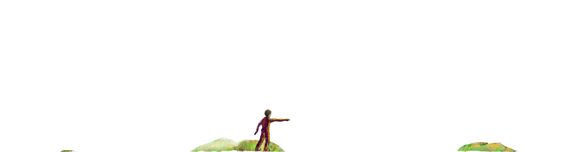
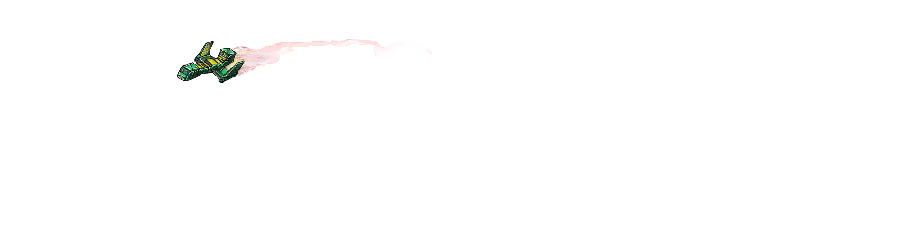
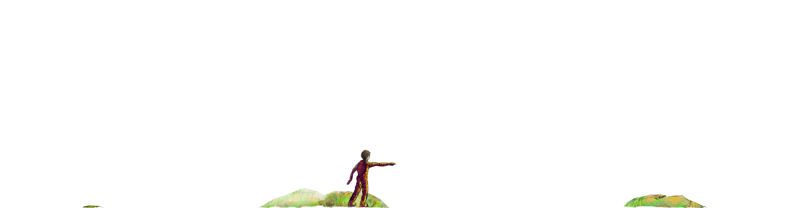
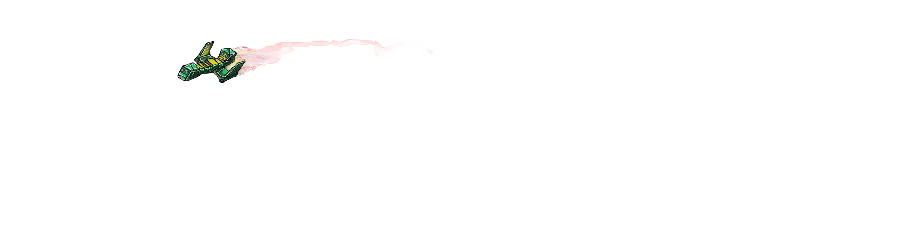

Leon i Podłużna Planeta
Gdzieś z pewnością jest Wszechświat, całkiem podobny do naszego, w którym ludzie podróżują między planetami i galaktykami tak łatwo, jak my dziś podróżujemy między miastami i krajami. To właśnie tam pozornie pusty kosmos przemierza niezwykły obiekt: Podłużna Planeta. Spójrzcie, właśnie okrąża ogromnego Jowisza, a następnie nurkuje w gęste pierścienie Saturna, sprytnie unikając ciekawskich spojrzeń ziemskich teleskopów.
Jak się już zapewne domyślacie Podłużna to asteroida, czyli sporych rozmiarów skała, która czasem zbliża się do Słońca, a czasem ucieka z jego ciepłych objęć i mknie ku innym światom.
Co w niej wyjątkowego?
Otóż jako jedyna posiada swoje pasma górskie, rzeki i lasy, a niebo tam ma taki sam kolor, jak u nas. Ale chcę wam o niej opowiedzieć z jeszcze jednego ważnego powodu: Podłużną Planetę zamieszkuje pewna fascynująca cywilizacja.
Nikt nie wie skąd przybyły Dodiki i do dziś stanowi to tajemnicę. Pewne jest jednak to, że pokochały swój dom i to one nadały mu nazwę. Dbały o niego, a on w zamian zabierał je w przepiękne miejsca, gdzie w roziskrzonych mgławicach mogły podglądać nieśmiałe, nowo narodzone gwiazdy.
Zapytacie zatem, jak wyglądają mieszkańcy Podłużnej Planety?
Na pewno są niewysocy – większości z was sięgali by ledwo do pasa. Jednak wcale nie oznacza to, że są mali. Noszą stroje utkane z włókien Zmiennorośli, które zmieniają kolor w zależności od nastroju właściciela. No i uwielbiają się śmiać.
Żyją w dwóch głównych osiedlach. Jedno z nich to Mała Osada, leżąca u stóp wysokich gór Krawędziowych. Drugie to Wysokie Miasto, czyli stolica Podłużnej Planety, gdzie mieszka sam Brodaty Król – władca wszystkich Dodików.
No i są jeszcze Zwierzuny. Jednak o nich niewiele mogę powiedzieć. Zamieszkiwały one Dżunglę Środkową, jeszcze zanim na asteroidzie pojawiły się Dodiki. Nigdy nie sprawiały żadnych problemów, ale też nie bardzo chciały pokazywać się publicznie i zaprzyjaźniać, dlatego zostawmy je na razie w spokoju.
Wracając do Dodików, najfajniejszymi przedstawicielami tej niezwykłej rasy jest trójka nierozłącznych towarzyszy: Odo, Benia i Gruby Fumek.
Nasi przyjaciele żyli szczęśliwie w Małej Osadzie wraz z innymi Dodikami, aż do dnia, który nazwano Pierwszym Zasypaniem.
To właśnie wtedy nad niewielką zieloną asteroidą pojawiły się opasłe statki-kontenerowce i otworzyły swoje metalowe brzuchy, z których wypadły ogromne ilości śmieci. Pojazdy rozsypywały ładunek byle jak i byle gdzie, aż w różnych miejscach Podłużnej Planety utworzyły się wysokie aż pod niebo kopce śmieci.
Na początku Dodiki nie przejęły się zbytnio przybyszami. Lecz gdy okazało się, że maszyny poczęły przelatywać regularnie, a z nieboskłonu sypały się wodospady różnego rodzaju żelastwa, szkieletów dziwnych urządzeń i nieprzyjemnie pachnących odpadków, małe stworki zaczęły martwić się o swój los.
Wielokrotnie próbowały skontaktować się z pilotami statków, jednak gdy jeden z nich podleciał na tyle nisko, by można było do niego wskoczyć, okazało się, że w środku nie ma żadnej żywej istoty. Tylko mnóstwo migoczących światełek i duszne, ciemne korytarze.
Tak więc z roku na rok śmieci przybywało. I pewnie biedne Dodiki zostałyby zupełnie zasypane i przepadły pod zwałami żelastwa, gdyby nie pewien chłopiec z planety Ziemia, który przypadkiem trafił na Podłużną Planetę.
Ale po kolei…
Pełna wersja do pobrania: